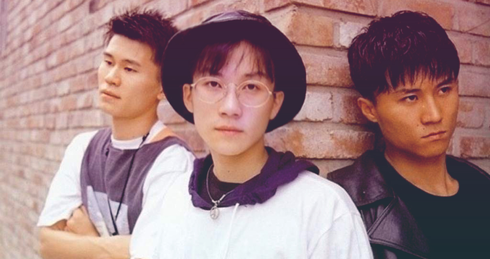
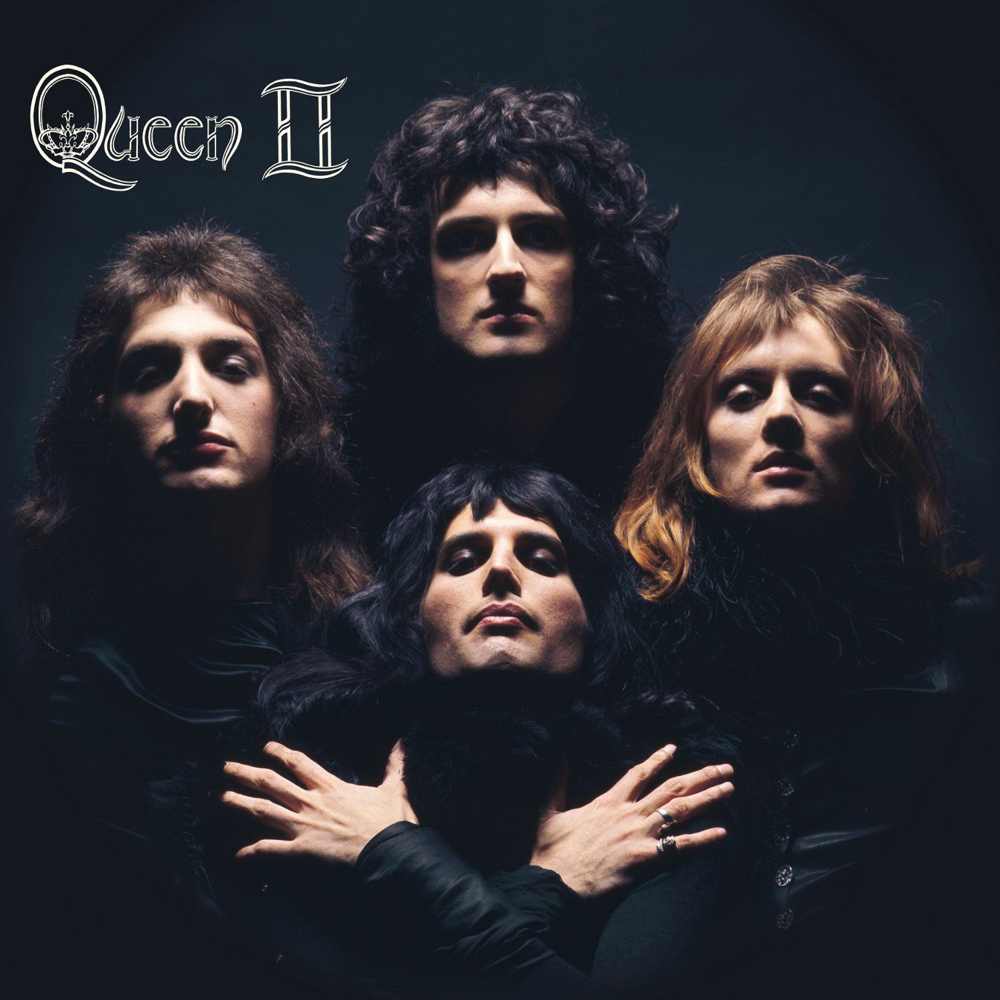
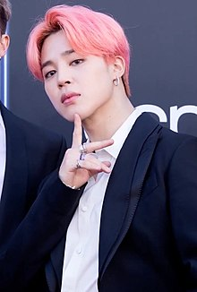

Los miembros fueron incluidos en la edición internacional de la revista Time como «Líderes de la nueva generación», y fueron parte de la lista de las 25 personas más influyentes del mundo en 2019, donde estaban apodados "Príncipes del Pop". Forbes Corea los reconoció como las celebridades más destacadas del país en 2018 y 2020, en tanto que el grupo se posicionó en el número 43 de la Forbes Celebrity 100 de 2019 como una de las boy bands con mayores ingresos del mundo. A partir de 2019, BTS supuestamente vale más de $ 4.65 mil millones para la economía de Corea del Sur cada año, o el 0.3 por ciento del PIB del país. Atraen a uno de cada 13 turistas extranjeros que visitaron Corea del Sur y fueron citados como uno de los actos clave para impulsar las ventas mundiales de música a $ 19 mil millones en 2018.
BTS ha citado a Seo Taiji and Boys, Nas, Eminem, Kanye West, Drake y Danger como inspiraciones musicales. También han citado a Queen como una influencia, y Suga dijo que "creció viendo videos de Live Aid". Durante su concierto en el estadio de Wembley en Londres, Jin rindió homenaje a Queen liderando a la multitud en una versión del canto "ay-oh" de Freddie Mercury del concierto Live Aid de la banda. El Universo BTS, también conocido como Universo Bangtan o BU, es un universo alternativo creado por Big Hit Entertainment que gira en torno al material discográfico de la banda. El argumento se centra en los siete miembros del grupo en una realidad alterna y muestra sus ansiedades e incertidumbres mientras enfrentan su futuro.365366 Su cronología inició en 2015 con la canción «I Need U» y se extiende hasta el presente. Asimismo, tanto el webtoon Save Me como el libro HYYH: The Notes 1 complementan la historia.
 
Kim Nam-joon (en hangul, 김남준; en hanja, 金南俊; Dongjak-gu, Seúl; 12 de septiembre de 1994), y más conocido por su nombre artístico RM , es un rapero, bailarín, compositor, productor y modelo surcoreano. Desde 2013, es el líder y rapero principal de la banda BTS
Kim Seok-jin (en hangul, 김석진; Anyang-Gwangcheon, 4 de diciembre de 1992), mejor conocido bajo su nombre artístico Jin, es un cantante, actor, modelo, presentador, compositor y bailarín surcoreano. Pertenece a la banda BTS, donde ocupa el puesto de vocalista, bailarín y visual desde 2013

Min Yoon-gi (en hangul, 민윤기; Daegu, 9 de marzo de 1993), más conocido por sus nombres artísticos Suga y Agust D, es un rapero, compositor, productor, modelo y bailarín surcoreano. Debutó en el grupo BTS en 2013 bajo la compañía Big Hit Entertainment
Jung Ho-seok (en hangul, 정호석; en hanja, 鄭號錫; Gwangju, 18 de febrero de 1994), conocido por su nombre artístico J-Hope, es un rapero, coreógrafo, bailarín, MC, compositor, modelo y productor surcoreano. Desde 2013 es miembro, bailarín principal y coreógrafo del grupo BTS
Park Ji-min (en hangul, 박지민; en hanja, 朴智旻; Busan, 13 de octubre de 1995), más conocido como Jimin (en hangul, 지민), es un cantante, compositor y bailarín surcoreano. En 2013, debutó como integrante de la boy band BTS.
Kim Tae-hyung (en hangul, 김태형; en hanja, 金泰亨; Seo-gu, 30 de diciembre de 1995), más conocido por su nombre artístico V, es un cantante, bailarín, compositor y actor surcoreano. Es miembro del grupo BTS, bajo la compañía Big Hit Entertainment
Jeon Jung-kook (en hangul, 전정국; en hanja, 田柾國; Mandeok-Dong, Busan; 1 de septiembre de 1997), conocido como Jungkook, es un cantante, bailarín, rapero, compositor, productor y modelo surcoreano. Desde 2013, es miembro, vocalista principal y maknae de la banda BTS, en la agencia de Big Hit Entertainment.